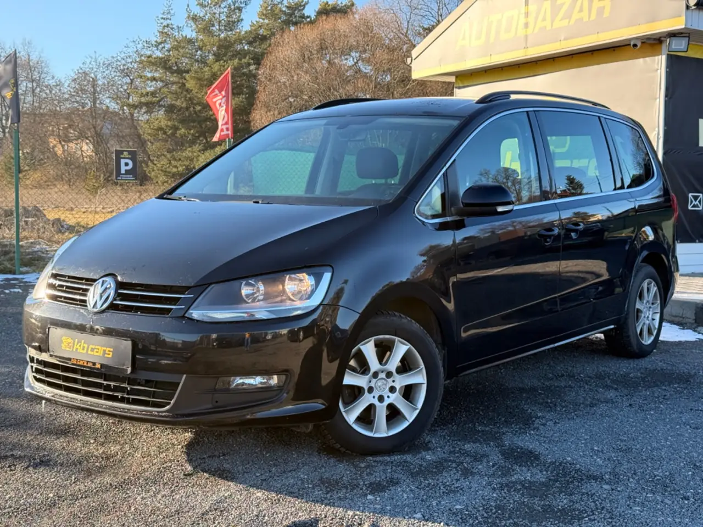
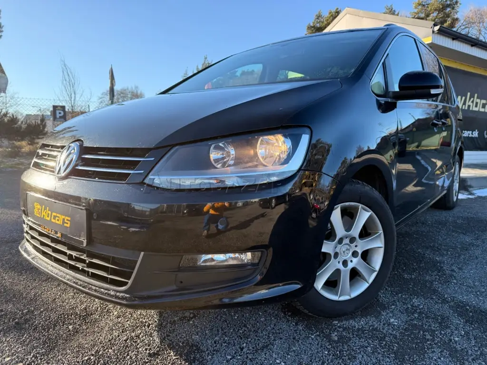
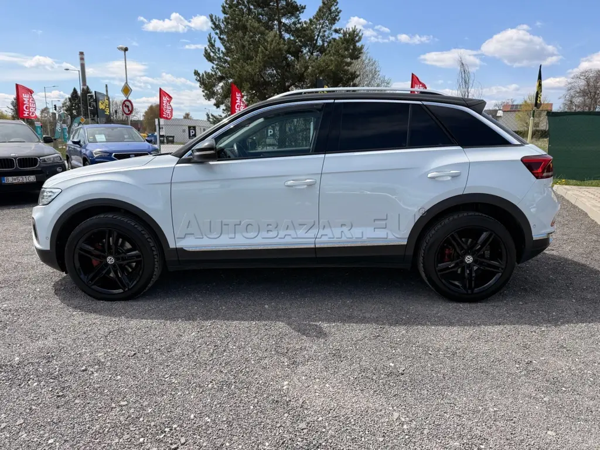
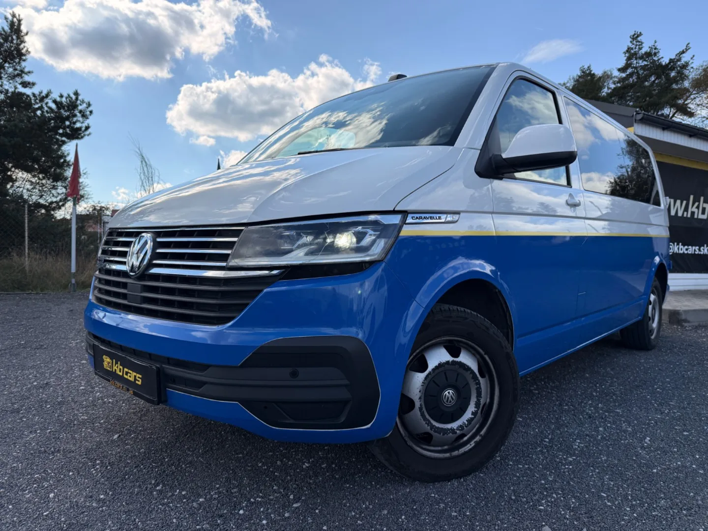
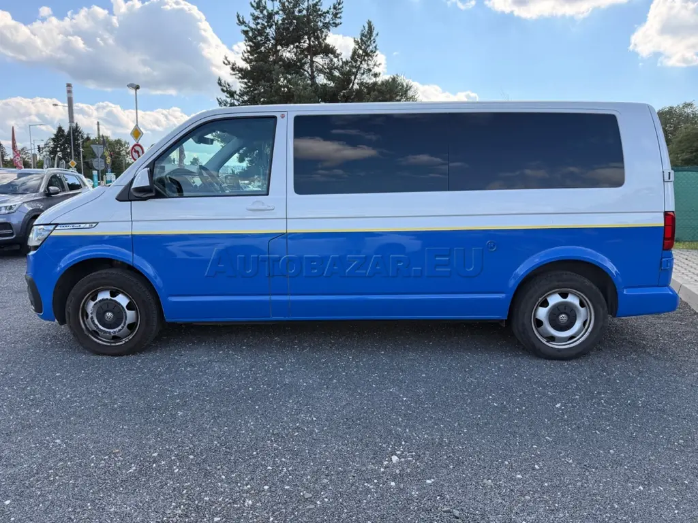

2013, 241 202 km, Diesel, Úžitkové
| Cena | 7 500 € |
|---|---|
| Rok výroby | 9/2013 |
| Najazdené | 241 202 km |
| Palivo | Diesel |
| Prevodovka | 6-st. manuálna |
| Výkon | 80 kW (109 k) |
| Karoséria | Dodávka |
| Pohon | Zadný |
| VIN | WV1ZZZ2EZE6007997 |
Vymenené ROZVODY pri 213000km, Nova náplň AC.
Uvedený stav najazdených kilometrov je zhodný s počtom kilometrov pri zaradení vozidla na inzerciu. V dôsledku skúšobných jázd dochádza k miernemu zvýšeniu počtu najazdených kilometrov a preto nás, prosím, pre zistenie presného aktuálneho stavu kilometrov kontaktujte. Prípadné chyby v inzercii vyhradené. Niektoré prvky výbavy nastavuje systém automaticky. Za prípadné chyby nezodpovedáme.
Štefánikova ul. (pri ČS Shell), 058 01 Poprad
Štefánikova ul. (pri ČS Shell), 058 01 Poprad
Mapa OpenStreetMap sa načíta až po kliknutí.






